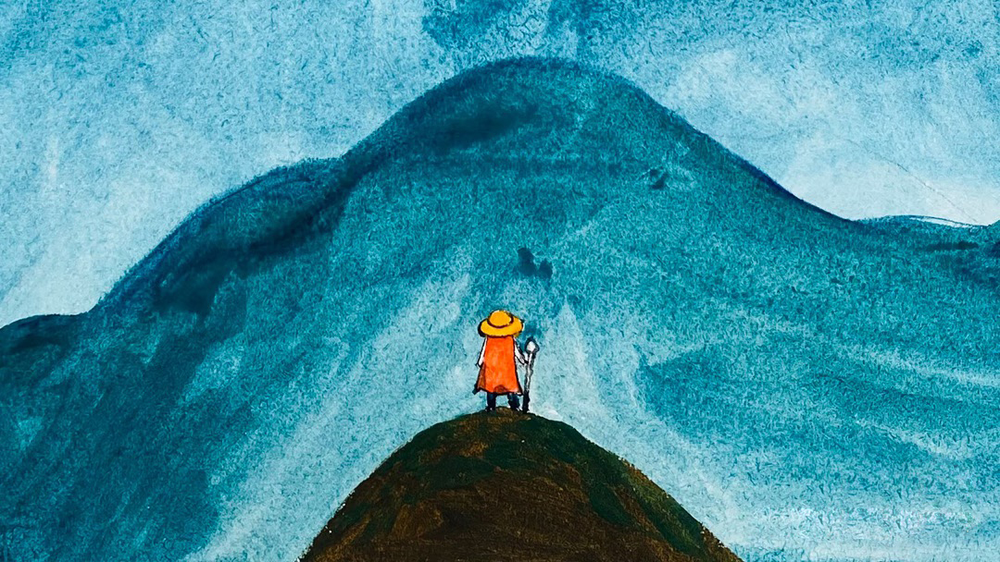

I simplify complex systems into human-centric experiences,
always intentional, always building trust.
👋 Hi! I'm Siyu /See-you/
Born in China and now based in Germany, my work is shaped by the transition from physical to digital. Starting my journey in industrial design and 3D spaces taught me to see UX not just as making apps, but as a way to solve complex puzzles and tell compelling stories.
I work across UX/UI and product strategy, shaping everything from enterprise cloud platforms to automotive software. Influenced by my engineering roots and the clarity of German design thinking, my approach is pragmatic, intentional, and always focused on unlocking a product's true potential.
With roots in physical design, I bridge offline and online
worlds to design connected experiences.
🙌 Have an idea to share or just want to say hi? Feel free to contact me.